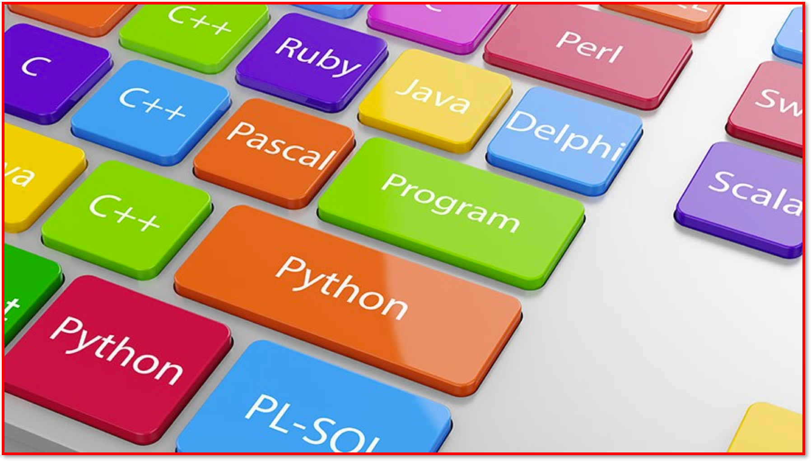
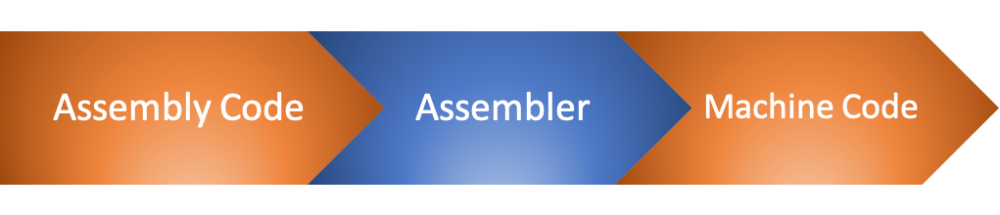

3.2.9 Classification of Programming Languages
Table of Contents
1 Classification of Programming Languages

Learn It: What are the different levels of Programming Languages?
A programming language - Is a formal language, which comprises a set of instructions that produce various kinds of output. Programming languages are used in computer programming to implement specific algorithms. Most programming languages consist of instructions for computers.
A computer program - Is a collection of instructions that performs a specific task when executed by a computer. Most computer devices require programs to function properly. A computer program is usually written by a computer programmer and can be can be written in either high or low-level languages, depending on the task and the hardware being used.
- When we think about computer programmers, we probably think about people who write in
high-level language. - Most computer programming languages are
writtenin ahigh-level programming language. Theyusethe common English language to help make the code moreunderstandableand tospeed upthe process of writing and debugging programs. - Computers, however,
usetheirown languagewritten usingbinarycalledMachine code. This isknownas alow-level language.
Programming languages can be divided into two different levels:
- High-level Languages – Python, Visual Basic, Java, C, C++, SQL and many more.
- Low-level Languages – Hardware/Processor-specific assembly languages and machine code.
Differences between Low-level and High-level Languages:
Learn It: Program Translators
Program Translators:
- High-level languages and assembler languages
needto betranslatedintomachine codefor acomputersystem tounderstand it.
There are three types of translator programs that will do this:
- Interpreters
- Once the program has been created, it needs to be saved before it can be run.
- At this point the programming language
translatesthesource codeintomachine codeone command/line at a time andimmediatelyexecutes them. - You must have the
interpreter installedon your computerin ordertorunthesoftware. - Every time the program runs, it
hasto betranslated againas there is no secondary file that is created to store the machine code and therefore must be translated each time the program is run. - A long, complex program will take a considerably
more timetoexecuteif it is being interpreted. - This makes interpreted code
slowerto run thancompiled code, but itshows any errorsas soon as it finds them, so it iseasier to debugthancompiled code. Python, Basic, JavaScript and Pascal are allinterpreter-based programming languages.
- Compilers:
- A compiler
translatesall thesource codeat the same time to create thecompiled code, ormachine code, also known as theobject code. - The machine code is saved and stored in a
separate fileto the high-level programming language. - Once the programmer has
created the program, they need to request it to becompiledbefore they canrunandtestthe file which cantake a while. - This can
make testingsmall sections of the programsloweras the whole programneedsto becompiledbefore any of it can be run. - Compiling can take a long time, but
once completethe compiledcode runs quicklyandreportsa list oferrors, if any have occurred. - Overall, once the program has
finished compiling,compiled programsarefaster to run. Java and C++ are compiler programming languages. - For the developer,
compiled codehas theadvantagethat the user of the softwarecannot seethesource codeorcopy it.
- A compiler
- Assemblers:
- An assembler
translatesassembly language intomachine codeand is effectively a compiler for theassembly language, but can also be used interactively like aninterpreter. - Assembly language uses words called
‘mnemonics’, such asLOAD, STOREandADD. The instructions arespecificto thehardwarebeingprogrammedbecausedifferent CPUsuse different programming languages. - Finally, every
assembly language instructionistranslatedinto a singlemachine codeinstruction.
- An assembler

- Compilers versus Interpreters Table:
Badge It: Exam Questions
Silver - Exam Style Questions
- Explain why a developer, who is good at both low-level and high-level programming languages, would normally use a high-level language when writing programs? (4 Marks)
- What is machine code? (1 Mark)
- Give an example of a high-level language? (1 Mark)
Upload to Fundamentals of 3.2 Programming - 3.2.9 Classification of Programming Languages: Silver on BourneToLearn
Badge It: Exam Questions
Gold - Answer the following questions:
- Describe three differences between low-level language and high-level languages? (6 Marks)
- What does a translator do? (2 Marks)
- Identify two types of translators that can turn high-level languages into machine code? (4 Marks)
Upload to Fundamentals of 3.2 Programming - 3.2.9 Classification of Programming Languages: Gold on BourneToLearn
Badge It: Exam Questions
Platinum - Exam questions
- What is the difference between an interpreter and a compiler? (4 Marks)
- What is assembly language? (2 Marks)
- A developer is writing a program.
- a) The program is written in a high-level language and it is then translated into machine code. Describe two differences between high-level language and machine code? (2 Marks)
- b) One type of translator is an interpreter.
- i) Describe how an interpreter translates high-level language programs into machine code? (1 Mark)
- ii) State the name of a different type of translator that can be used to translate high-level code into machine code? (1 Mark)
Upload to Fundamentals of 3.2 Programming - 3.2.9 Classification of Programming Languages: Platinum on BourneToLearn